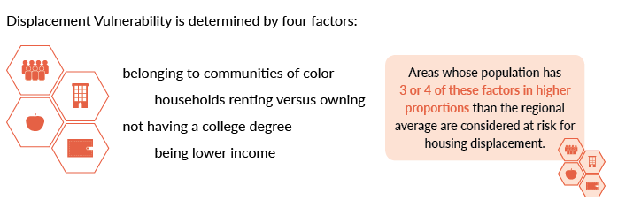

The changing housing market and demographic dynamics have had a significant effect on the Metro housing market. Between 1990 and 2014, an increased share of the Portland metro area population has become vulnerable to displacement from their neighborhoods.
Displacement factors consistent with the City of Portland’s Gentrification and Displacement Study methodology.
Between 1990 and 2014, vulnerable households have increasingly become concentrated at the edges of the region, rather than in its center as people of color, renters, and those with low incomes can no longer find attainable housing in close-in neighborhoods —see the movement of the dark red areas over time. This change is particularly noticeable in inner Northeast Portland, which was a vulnerable area in the 1990s. By 2020, without changes in trends, the area’s population will be substantially less diverse with higher incomes.
ECONorthwest gathered data on the following four risk factors from the 1990 and 2000 Decennial Census and 2009-2015 5-year American Community Survey for the Three-County Area. Estimates were adjusted to the lower boundary of the given margin of error.